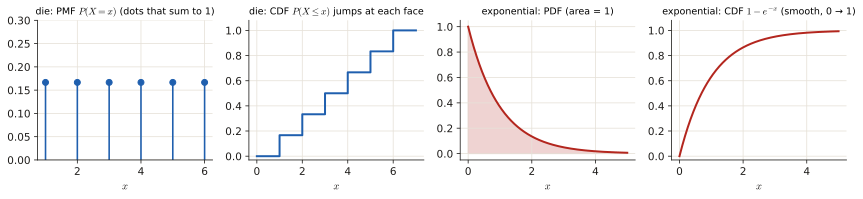
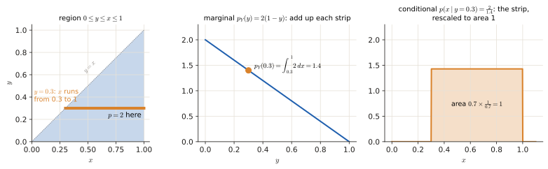
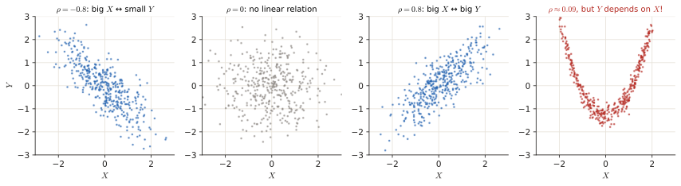
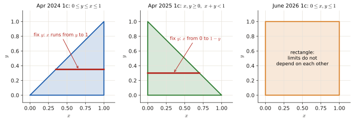
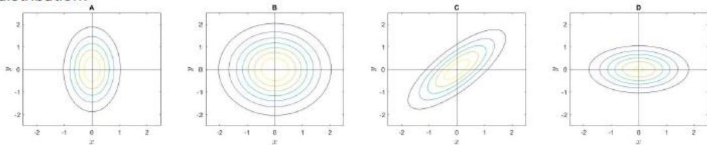
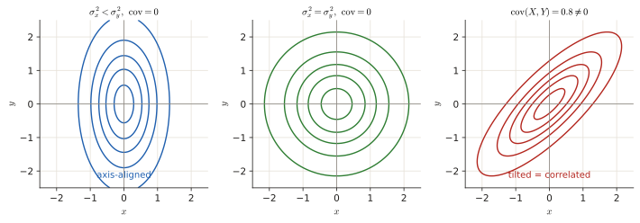

1.2 Random variables & joint PDFs#
Two kinds of questions live here: quick multiple choice on what a random variable, expected value or covariance is, and a small calculation on a joint PDF (find the constant, a marginal, a conditional, or check independence). Recent exams have one of each. This page defines every word, shows each operation on a tiny example, and only then turns to the exam questions.
Before this page
- What a PDF is and that probabilities are areas (0.6); mean and variance (0.6)
- Integrals as areas, \(\int_0^1x^n\,dx=\frac1{n+1}\), \(\int_0^\infty e^{-x}dx=1\) (0.4, Toolbox)
- Conditional probability and independence (1.1)
If you read only one thing: for two random variables, draw the region where the joint PDF is non-zero. Every limit of every integral (normalising, marginal, conditional) is read off that picture.
1 · The idea, from zero#
1.1 Random variables: discrete and continuous#
A random variable (RV) \(X\) maps the outcome of an experiment to a number: the face of a die, the voltage on a wire, the number of patients.
- Discrete RV: it can take a countable list of values (counts, integers, die faces, a phone number). Described by a PMF (probability mass function) \(p_X(x)=P(X=x)\), which sums to 1.
- Continuous RV: it can take any value in an interval (time, distance, weight, voltage, an average of money). Described by a PDF \(p_X(x)\), which integrates to 1. Probabilities are areas: \(P(a\le X\le b)=\int_a^b p_X(x)\,dx\).
- CDF \(P_X(x)=P(X\le x)\): always goes from 0 at \(-\infty\) to 1 at \(+\infty\) and never decreases.
Quick test: can I list the possible values (0, 1, 2, …), or is it a measurement on a continuum? Counts are discrete; durations, distances and averages are continuous.

1.2 Expected value and variance#
Expected value = the average outcome, each outcome weighted by its probability:
It is the long-run average over infinitely many repetitions. It is not "the most likely value" (that is the mode) and not "the most common value".
A die
\(\mathbb E[X]=1\cdot\frac16+2\cdot\frac16+\dots+6\cdot\frac16=\frac{21}{6}=3.5\): a value that can never be rolled, but the average of a million rolls. \(\mathbb E[X^2]=\frac{91}6=15.17\), so \(\operatorname{Var}=15.17-3.5^2=2.92\).
Variance = average squared distance from the mean: \(\operatorname{Var}[X]=\mathbb E[(X-\mu)^2]=\mathbb E[X^2]-\mu^2\).
1.3 Two random variables at once#
A joint PDF \(p_{X,Y}(x,y)\) describes \(X\) and \(Y\) together (a surface over the \((x,y)\) plane; probabilities are volumes; the total volume is 1). Three operations:
| Operation | Formula | In words |
|---|---|---|
| Marginal | \(p_X(x)=\int p_{X,Y}(x,y)\,dy\) | forget \(Y\) by summing/integrating over all its values (for a table of probabilities: sum each row) |
| Conditional | \(p_{X\mid Y}(x\mid y)=\dfrac{p_{X,Y}(x,y)}{p_Y(y)}\) | slice the surface at a fixed \(y\) and renormalise so the slice has area 1 |
| Independence | \(p_{X,Y}(x,y)=p_X(x)\,p_Y(y)\) for all \(x,y\) | knowing \(Y\) tells nothing about \(X\) |
Tiny example: uniform on a triangle
\(p_{X,Y}=2\) on the triangle \(0\le y\le x\le1\) (area \(\frac12\), so height 2 makes the volume \(\frac12\cdot2=1\) ✓). Marginal of \(Y\): at height \(y\), \(x\) runs from \(y\) to 1, so \(p_Y(y)=\int_y^12\,dx=2(1-y)\). Conditional: \(p_{X\mid Y}=\frac{2}{2(1-y)}=\frac{1}{1-y}\) on \(y\le x\le1\): a flat slice. This is not independent, because the region is a triangle: knowing \(y\) changes the possible range of \(x\).

1.4 Covariance and correlation#
Covariance \(\operatorname{Cov}[X,Y]=\mathbb E[(X-\mu_X)(Y-\mu_Y)]=\mathbb E[XY]-\mu_X\mu_Y\): the average product of the two deviations from the means. If large \(X\) comes with large \(Y\) the product is positive; if large \(X\) comes with small \(Y\) it is negative.
Numbers
Three equally likely pairs \((1,2),(2,3),(3,7)\). Means: \(\mu_X=2\), \(\mu_Y=4\). Products of deviations: \((-1)(-2)=2,\ (0)(-1)=0,\ (1)(3)=3\). Average: \(\frac{5}{3}=1.67>0\). If \(Y\) is measured in other units (×10), the covariance becomes \(16.7\).
Its sign tells the direction of the relation. It has no upper bound and depends on the units. The correlation coefficient \(\rho=\frac{\operatorname{Cov}}{\sigma_X\sigma_Y}\) fixes that: it is always between \(-1\) and \(1\) and does not change with units. Independent variables have zero covariance (the reverse is not true in general).

For two Gaussians, the covariance matrix \(\begin{bmatrix}\sigma_x^2&\operatorname{Cov}\\\operatorname{Cov}&\sigma_y^2\end{bmatrix}\) decides the shape of the contour lines of the joint PDF (see Jan 2025 1b).
Recipe: joint PDF questions
- Draw the region where the PDF is non-zero. This is the step that gives you the integration limits.
- Normalise: set \(\iint p\,dx\,dy=1\) and solve for the constant.
- Marginal of \(X\): fix \(x\), integrate over \(y\) from the bottom to the top of the region at that \(x\). The answer is a function of \(x\) only, valid on the \(x\)-range of the region.
- Conditional \(p_{X\mid Y}\): joint divided by marginal. Its domain is the slice of the region at that \(y\).
- Independence: the region must be a rectangle (limits of \(x\) do not depend on \(y\)) and the joint must factor into \(f(x)g(y)\).

Exam questions: joint PDFs#
June 2026 resit · 1c#
Resit Q4, June 2026 · 1c · 0.5 p
Let \(X\) and \(Y\) be jointly continuous random variables with a joint Probability Density Function (PDF) given by:
Please provide only the final answer. The workout will not be checked.
- Find the marginal PDF \(p_X(x)\) and indicate its domain. [0.25]
- Determine whether \(X\) and \(Y\) are independent, and briefly justify why. [0.25]
Solution
What is being asked? (1) Integrate \(y\) out. (2) Decide whether the joint factorises.
Step 1 — the region. The unit square \(0\le x\le1\), \(0\le y\le1\): for every \(x\), \(y\) runs from 0 to 1 (right panel above).
Step 2 — marginal of \(X\) (treat \(x\) as a constant, \(\int_0^1y\,dy=\frac12\)):
Step 3 — marginal of \(Y\) (same way, \(\int_0^1x^2dx=\frac13\)): \(p_Y(y)=\int_0^1 6x^2y\,dx=6y\cdot\frac13=2y\), \(0\le y\le1\).
Step 4 — independence test. \(p_X(x)p_Y(y)=3x^2\cdot2y=6x^2y=p_{X,Y}(x,y)\) everywhere, and the support is a rectangle.
Answer
- \(p_X(x)=3x^2\) for \(0\le x\le1\), 0 otherwise.
- Independent: \(p_{X,Y}(x,y)=p_X(x)\,p_Y(y)=3x^2\cdot2y\) on a rectangular support.
April 2025 exam · 1c#
Final exam Q3, 13 April 2025 · 1c · 0.3 p
Let \(X\) and \(Y\) be jointly continuous random variables with joint PDF given by:
Note: For the conditions \(x, y \geq 0, x + y < 1\) to be satisfied, \(x < 1 - y\) and \(y < 1\), or equivalently \(y < 1 - x\) and \(x < 1\).
Provide only the final answer. The workout will not be checked.
Find the constant \(c\).
Solution
What is being asked? The total volume under the surface must be 1; solve for the unknown constant \(c\).
Step 1 — the region. The triangle under the line \(x+y=1\) (middle panel above). The note gives the limits: for fixed \(y\in[0,1]\), \(x\) goes from 0 to \(1-y\).
Step 2 — inner integral over \(x\) (\(\int_0^{a}x\,dx=\frac{a^2}{2}\), with \(a=1-y\)):
Step 3 — outer integral over \(y\), substitute \(u=1-y\) (limits stay 0 to 1): \(\int_0^1\left(\frac{c\,u^2}{2}+u\right)du=\frac{c}{2}\cdot\frac13+\frac12=\frac c6+\frac12.\)
Step 4 — normalise: \(\frac c6+\frac12=1\Rightarrow c=3\).
(Check by splitting: \(\iint1=\) area of the triangle \(=\frac12\); \(\iint x=\int_0^1x(1-x)dx=\frac16\); so \(\frac c6+\frac12\) ✓.)
Answer
\(c=3\)
April 2024 exam · 1c#
Final exam Q3, April 2024 · 1c · 0.3 p
Random variables \(X\) and \(Y\) have joint PDF
Find the marginal PDF of \(Y\) (\(p_Y(y)\)), and the conditional PDF \(p_{X|Y}(x|y)\). For both PDFs make sure to correctly indicate their domain.
Note: provide only the final answer. No passages will be checked.
Solution
What is being asked? Exactly the tiny example of 1.3, with the domains spelled out.
Step 1 — the region. The triangle below the diagonal (left panel above). For a fixed \(y\), \(x\) runs from \(y\) up to 1.
Step 2 — marginal:
Step 3 — conditional = joint / marginal, on the slice at that \(y\):
So given \(Y=y\), \(X\) is uniform on \([y,1]\) (a flat slice of width \(1-y\) has height \(\frac1{1-y}\), area 1 ✓).
Domain of the conditional
The review slides write the domain of \(p_{X\mid Y}\) as "\(0\le y\le 1\)". That is the range of the given \(y\). The variable of the conditional PDF is \(x\), and it lives on \(y\le x\le1\). Write both and you are safe.
Answer
\(p_Y(y)=2(1-y)\) for \(0\le y\le1\) (0 otherwise); \(\;p_{X\mid Y}(x\mid y)=\dfrac{1}{1-y}\) for \(y\le x\le1\) (0 otherwise).
June 2024 resit · 1c#
Resit June 2024 · 1c · 0.25 p (shown in the Part 1 review lecture)
Random variables have joint PDF given by:
for \(0 \leq y \leq x < \infty\).
What is the correct values for the normalization constant \(c\)?
a) 1 b) 4 c) ½ d) 2
Solution
What is being asked? Total volume \(=1\), solve for \(c\).
Step 1 — the region. Below the diagonal, unbounded to the right. For fixed \(x\), \(y\) runs from 0 to \(x\).
Step 2 — inner integral: \(\int_0^xe^{-y}dy=1-e^{-x}\).
Step 3 — outer integral:
Step 4: \(\frac c2=1\Rightarrow c=2\).
Answer
(d) \(c=2\)
November 2022 exam · 1b#
Final exam Q1, 7 November 2022 · 1b · 0.25 p
Consider two random variables \(X\) and \(Y\) with joint PMF \(p_{X,Y}(x,y)\) given by the following table. What is the marginal PMF of \(X\)?
| \(Y = 0\) | \(Y = 1\) | \(Y = 2\) | |
|---|---|---|---|
| \(X = 0\) | ⅙ | ¼ | ⅛ |
| \(X = 1\) | ⅛ | ⅙ | ⅙ |
- (a) \(p_X(0)=7/24\), \(p_X(1)=5/24\), 0 otherwise
- (b) \(p_X(0)=13/24\), \(p_X(1)=11/24\), 0 otherwise
- (c) \(p_X(0)=13/24\), \(p_X(1)=5/24\), \(p_X(2)=11/24\), 0 otherwise
- (d) \(p_X(0)=7/24\), \(p_X(1)=5/12\), \(p_X(2)=7/24\), 0 otherwise
Solution
What is being asked? The marginal of \(X\) from a table: forget \(Y\) by summing each row (1.3).
Step 1 — common denominator 24: \(\frac16=\frac4{24}\), \(\frac14=\frac6{24}\), \(\frac18=\frac3{24}\).
Step 2 — row sums. Row \(X=0\): \(\frac{4+6+3}{24}=\frac{13}{24}\). Row \(X=1\): \(\frac{3+4+4}{24}=\frac{11}{24}\). Check: \(13+11=24\) ✓.
Step 3 — eliminate. Options (c) and (d) mention \(X=2\), which never occurs in the table.
Answer
(b) \(p_X(0)=13/24\), \(p_X(1)=11/24\)
January 2025 resit · 1b#
Resit January 2025 · 1b · 0.25 p (shown in the Part 1 review lecture)
Random variables \(X\) and \(Y\) follow a bi-variate Gaussian distribution, with covariance matrix of the form:
Which of the following contour plots is NOT a possible 2D projection of this bi-variate Gaussian distribution?

Solution
What is being asked? Which picture is impossible when the covariance (the off-diagonal entry) is zero.
How to read a contour plot: each closed curve connects points with the same density, like height lines on a map. The centre is the mean. The shape tells you the covariance matrix:

Step 1 — zero off-diagonal. No covariance → ellipses aligned with the axes. Longer along the axis with the bigger variance (A: taller in \(y\); D: wider in \(x\)), a circle if the variances are equal (B).
Step 2 — the odd one out. A tilted ellipse means that large \(x\) tends to come with large \(y\) (or small \(y\)), i.e. a non-zero covariance, which needs a non-zero off-diagonal entry. That is impossible here.
Answer
C (the tilted ellipse needs \(\operatorname{Cov}(X,Y)\neq0\))
Exam questions: concepts (multiple choice)#
April 2025 exam · 1b#
Final exam Q3, 13 April 2025 · 1b · 0.25 p
Which of the following best describes the expected value of a discrete random variable?
- (a) It is the geometric average of the probability mass function over all possible outcomes.
- (b) It is the simple average of the probability mass function over all possible outcomes.
- (c) It is integral of the probability mass function over the range on which the random variable is defined.
- (d) It is the weighted average of the probability mass function over over all possible outcomes.
Solution
What is being asked? The definition of \(\mathbb E[X]\) (1.2): \(\sum_x x\,p_X(x)\), the outcomes averaged with weights \(p_X(x)\). (a) and (b) are other kinds of averages; (c) is just \(\sum p_X=1\). The official clarification says (d) should read "the average of the outcomes, weighted by the probability mass function". The same question appeared in the 2021 practice exam (1c below).
Answer
(d)
June 2024 resit · 1b#
Resit June 2024 · 1b (shown in the Part 1 review lecture)
Classify each random variable as either discrete or continuous:
| Random variable | |
|---|---|
| 1 | The duration of the next outgoing telephone call from a business office. |
| 2 | The number of applicants for a job. |
| 3 | The distance a rental car rented on a daily rate is driven each day. |
| 4 | The number of accident-free days in one month at a factory. |
| 5 | The average amount spent on electricity each July by a randomly selected household in a certain state. |
Solution
What is being asked? Apply the quick test of 1.1: can the possible values be listed (0, 1, 2, …), or is it a measurement on a continuum? Durations, distances and averages are measurements; "number of …" is a count.
Answer
1 continuous · 2 discrete · 3 continuous · 4 discrete · 5 continuous
January 2022 resit · 1b#
Resit, 24 January 2022 · 1b · 0.3 p
Suppose we are analyzing a infinite set of pictures. For each pixel in each picture we record its color as an integer between 0 and 255. Which of the following statements is true?
- a) The color of each pixel is a continuous random variable.
- b) Each picture is a realization of a random process, hence a random signal.
- c) The infinite set of pictures represents a wide sense stationary random process.
- d) Each picture represents a random process, and the color of each pixel is a realization of the random process, hence a random signal.
Solution
What is being asked? The vocabulary of 0.6: a random process is the whole ensemble of possible signals; one recording of it (one picture here) is a realisation, i.e. a random signal.
- (a) No: integers 0–255 are a countable set, so the colour is discrete.
- (b) Yes: one picture is one realisation (indexed by pixel position instead of time).
- (c) Nothing in the text says the statistics are the same at every pixel position, so you cannot claim wide-sense stationarity.
- (d) Swaps the roles: one pixel value is a single random variable, not a signal.
Answer
(b)
Practice exam 2021 · 1b, 1c, 1d#
Practice exam, 28 October 2021 · 1b · 0.5 p
The covariance of two random variables: (Hint: think about the differences between covariance and correlation.)
- a) does not have an upper bound.
- b) it provides an indication of the direction (positive/negative) of the relationship between the variables.
- c) is greatly influenced by the scaling of the variables.
- d) All of the above.
Solution
What is being asked? Which properties of the covariance are true (1.4).
Step 1. (a) true: it can be any size. (b) true: positive when the two move together, negative when they move oppositely. (c) true: change the units and it scales (the review slides: the same force/mass experiment gives Cov = 1.30 in N·kg and 19 in lbf·lb, while \(\rho\approx0.9\) in both).
Step 2. All three are true. The correlation coefficient is the scaled, bounded version.
Answer
(d) All of the above
Practice exam, 28 October 2021 · 1c · 0.5 p
Which of the following best describes the expected value of a discrete random variable?
- a) It is the geometric average over all possible outcomes.
- b) It is the weighted average over all possible outcomes.
- c) It is the simple average over all possible outcomes.
- d) It is the integral of the probability mass function over the range on which the random variable is defined.
Solution
What is being asked? Same as April 2025 1b: \(\mathbb E[X]=\sum x\,p(x)\), outcomes weighted by their probabilities. (d) is just \(\sum p(x)=1\).
Answer
(b)
Practice exam, 28 October 2021 · 1d · 0.5 p
A basketball player makes 80 percent of his free throws during the season. What is the probability that he will make exactly 6 of his next 8 free throws?
a) 0.1468 b) 0.3355 c) 0.1678 d) 0.2936
Solution
What is being asked? "Exactly \(k\) successes in \(n\) independent tries, each with success probability \(p\)" is the binomial distribution.
Step 1 — one particular sequence. Say the first 6 throws go in and the last 2 miss: probability \(0.8^6\cdot0.2^2\) (independent throws multiply).
Step 2 — how many sequences? Choose which 2 of the 8 throws are misses: \(\binom82=\frac{8\cdot7}{2}=28\) (\(=\binom86\)).
Step 3 — multiply: \(P(6)=28\cdot0.8^6\cdot0.2^2=28\cdot0.262144\cdot0.04=0.2936\).
Answer
(d) 0.2936
January 2020 retake · 1d#
Retake exam, 20 January 2020 · Exercise 1(d) · 0.25 p
The expected value of a random variable is the
- A. value that has the highest probability of occurring.
- B. mean value over a infinite number of observations of the variable.
- C. largest value that will ever occur.
- D. most common value over an infinite number of observations of the variable.
Solution
What is being asked? The meaning of \(\mathbb E[X]\) (1.2). A and D describe the mode, C the maximum. The expected value is the long-run average. Example: for a die, \(\mathbb E[X]=3.5\), a value that never occurs.
Answer
B
January 2019 retake · 1a#
Written exam, 21 January 2019 · Exercise 1(a) · 0.5 p (1 or 2 answers correct)
Let \(X\) be a random variable. Which \(X\) defined below is discrete?
- A. Take a random student in the classroom and let \(X\) be his/her weight.
- B. Roll the dice \(n\) times and let \(X\) be the number of 4s.
- C. Take a person in the street and let \(X\) be his/her phone number.
- D. Let \(X\) be the time it takes for you to get to university in the morning.
Solution
What is being asked? Apply the "can I list the values?" test (1.1). Weight (A) and time (D) are measurements: continuous. "Number of 4s" (B) is a count; a phone number (C) comes from a countable list.
Answer
B and C